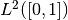
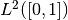

Extending ODL¶
ODL is written to be easy to extend with new functionality and classes, and new content is welcome. With that said, not everything fits inside the main library, and some ideas are better realized as extension packages, i.e., packages that use the core ODL library and extend it with experimental features. This lowers the requirement on code maturity, completeness of documentation, unit tests etc. on your side and allows the core library to stay slim and develop faster.
There are several ways to extend ODL, some of which are listed below.
Adding Tensor spaces¶
The abstract TensorSpace is the workhorse of the ODL space machinery.
It is used in the discrete  case, as well as data representation for discretized function spaces such as  in the
case, as well as data representation for discretized function spaces such as  in the DiscretizedSpace class.
They are in general created through the rn and uniform_discr functions which take an impl parameter, allowing users to select the backend for array storage and computations.
In the core ODL package, there is only a single backend available: NumpyTensorSpace, given by impl='numpy', which is the default choice.
As an advanced user, you may need to add additional spaces of this type that can be used inside ODL, perhaps to add MPI support. There are a few steps to do this:
Create a new library with a
setuptoolsinstaller in the form of asetup.pyfile.Add the spaces that you want to add to the library. The spaces need to inherit from
TensorSpaceand implement all of its abstract methods. See the documentation for further information on the specific methods that need to be implemented.Add the methods
tensor_space_impl()andtensor_space_impl_names()to a fileodl_plugin.pyin your library. The former should return adictmapping implementation names to tensor space classes, the latter the names only.Add the following to your library’s
setup.pyin the call of thesetupfunction:entry_points={‘odl.space’: [‘mylib = mylib.odl_plugin’]
Replace
mylibwith the name of your plugin.
For a blueprint of all these steps, check out the implementation of the odlcuda plugin.